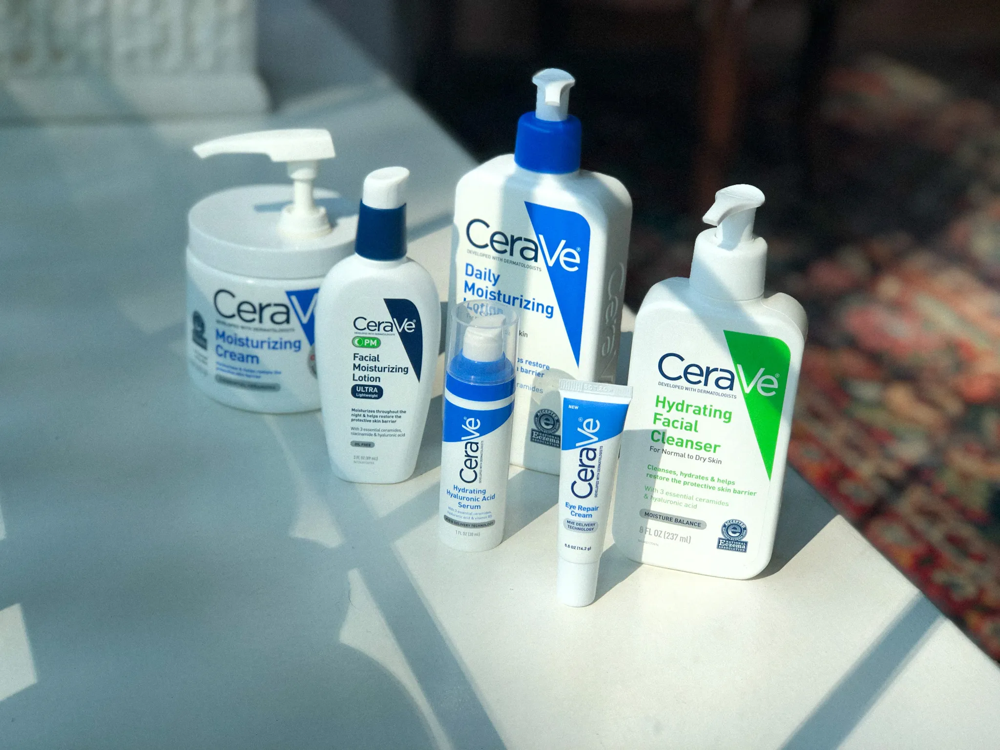

Уход за кожей лица
Можно бесконечно долго рассуждать о том, что лицо – это зеркало нашего возраста и здоровья... Это, безусловно, так – однако существуют и более прагматичные причины, по которым комплексный уход за лицом должен быть обязательной рутиной каждого дня.
Важно понимать, что ежедневный уход за лицом – это не только забота о сегодняшнем состоянии кожи: ее очищении, питании, увлажнении и укреплении. Это еще и серьезная работа на перспективу. Правильно подобранный уход за кожей лица позволяет бороться с признаками ее преждевременного старения, обезвоживанием, появлением мелких морщин, птоза (обвисания кожи) и гиперпигментации.
Базовые правила ухода за кожей лица могут быть достаточно просты и легко выполнимы. Если вы не знаете, с чего начать грамотно организованный и системный уход за лицом, сперва рекомендуем сверить свои ежедневные рутины с нашим чек-листом:
Подбор бьюти-средств часто происходит под впечатлением от общего описания их действий: очищающий гель, увлажняющий крем, укрепляющая сыворотка – или по поиску определенных ингредиентов в составе с учетом потребностей кожи. Однако один и тот же основной ингредиент может нуждаться, в зависимости от типа кожи, в различных дополняющих компонентах.
Например, очищающие гели CeraVe: один - для жирной и нормальной кожи и другой - для сухой, «неровной» кожи будут иметь принципиально разные вспомогательные компоненты. Первый образует интенсивную очищающую пену, а второй имеет мягкую текстуру крем-геля.
Домашний уход за кожей лица просто обязан быть ежедневным и комплексным – вне зависимости от жизненных ситуаций, усталости или обстановки вокруг. Даже в отпуске, командировке, после вечеринок или детских праздников необходимо выделять время на привычные бьюти-рутины, не пропуская ни одного этапа.
Правильно подобранный уход за лицом может состоять из определенных этапов, таких как:
Дополнительно несколько раз в неделю рекомендуется практиковать:
Теперь давайте подробно разбираться, как подбирать косметические средства в зависимости от типа и потребностей кожи.
Как мы уже писали, это один из важнейших факторов, от которого во многом будет зависеть эффективность работы выбранного вами средства и его польза для кожи.
Жирная кожа: вам рекомендуются интенсивно очищающие, успокаивающие и увлажняющие средства. Можно отдать предпочтение средствам, не «забивающим» поры – обычно это можно понять по пометке «некомедогенно» на упаковке или в описании продукта.
Сухая кожа: стоит присмотреться к интенсивно увлажняющим, восстанавливающим и укрепляющим средствам. Ваша цель: восстанавливать защитный барьер кожи и не давать влаге испаряться с ее поверхности.
Комбинированная кожа: для такой кожи следует подбирать средства, которые будут способствовать поддержанию гидролипидного барьера кожи, не забивая поры в области Т-зоны.
Нормальная кожа: в этом случае рекомендуется следить за тем, чтобы не пересушить кожу. Можно подбирать средства, которые укрепляют защитные функции кожи и помогут предотвратить ее обезвоживание.
При выборе подходящих средств можно руководствоваться информацией о том, для какого типа кожи предназначен продукт, указанной на упаковке. Ведь производители стараются создавать косметические средства специально с учетом потребностей кожи того или иного типа.
При подборе средств для ухода за лицом в домашних условиях стоит обращать внимание на состав интересующего продукта. Каждый компонент выполняет определенную роль: например, некоторые ингредиенты могут отвечать за текстуру формулы, а другие - позволяют продукту проявлять свои ухаживающие свойства.
Вот несколько компонентов, к которым мы рекомендуем особенно присмотреться:
После того, как мы выяснили, каким может быть правильно подобранный уход за лицом и на какие моменты следует обращать внимание при выборе косметических средств, давайте пройдемся по всем этапам пошагового ухода за кожей лица.
Обязательный этап, который направлен на избавление кожи от остатков макияжа, частичек грязи и бытовой пыли, следов пота… Даже если вы «практически не краситесь», не рекомендуем пропускать этот этап и начинать сразу с очищения.
Рекомендуемое средство: увлажняющая очищающая мицеллярная вода CeraVe. В ее состав входят церамиды, укрепляющие защитный барьер и предотвращающие излишнюю потерю влаги, и ниацинамид, успокаивающий кожу.
Ежедневный уход за кожей лица подразумевает очищение два раза в день: не только вечером, но и утром. И если вечернее очищение кажется нам естественным, то утреннее может вызывать вопросы... Оно необходимо, чтобы убрать следы ночной активности кожи и подготовить ее к дальнейшему утреннему уходу.
Рекомендуемое средство: очищающая крем-пенка для умывания нормальной и сухой кожи CeraVe. В ее формулу входят церамиды и важные для кожи аминокислоты. Крем-пенка не только очищает, но и увлажняет кожу, не нарушая ее естественный защитный барьер.
Здесь важно не просто завершить очищение кожи, но и при необходимости восстановить ее гидролипидный баланс. Сделать это можно с помощью тоника или легкого лосьона, обогащенных дополнительными ухаживающими компонентами по потребностям кожи.
На этом этапе мы обычно можем применять уход, который выполняет одну из этих функций – в зависимости от индивидуальных потребностей нашей кожи. Важно своевременно применять дневные и ночные кремы, не стоит думать, что это лишь маркетинговая уловка.
Утром рекомендуется использование дневного крема, поскольку это может обеспечить коже длительное увлажнение и защиту от агрессивного воздействия внешней среды. А ночь может стать лучшим временем для работы питательных или восстанавливающих кремов.
Как правило, оно может и не входить в ежедневную бьюти-рутину, однако рекомендуется к применению 2-3 раза в неделю (в зависимости от инструкции по применению, типа и состояния кожи). Основная задача отшелушивающих средств – аккуратно убрать ороговевшие клетки кожи и выровнять кожный микрорельеф. Обращайте внимание на средства, которые содержат бережно отшелушивающие компоненты и не обладают чрезмерно агрессивным воздействием на кожу.
Рекомендуемое средство: SA смягчающий очищающий гель для сухой кожи от CeraVe. Формула с церамидами, салициловой и гиалуроновой кислотами деликатно и бережно отшелушивает сухую и неровную кожу, не повреждая ее защитный барьер, что способствует удержанию в ней влаги.
Даже разобравшись, как правильно подбирать уход за лицом, не забывайте, что здоровый вид, красота и молодость кожи могут зависеть не только правильного подбора и применения косметических средств, но и от большого количества внешних факторов.
Как бы банально ни звучал этот совет, но он действительно работает. Базовые принципы ЗОЖ помогают поддерживать здоровый вид кожи:
Используйте косметику с SPF не только в теплое и солнечное время года. Ультрафиолетовые лучи могут быть весьма агрессивными даже в пасмурную погоду и способны спровоцировать не только солнечные ожоги, но и обезвоживание, гиперпигментацию и преждевременное старение кожи.
Обратите внимание, что и в городских условиях необходимо пользоваться SPF-защитой – даже если вы перемещаетесь на машине или проводите много времени в офисных помещениях. Агрессивные УФ-лучи проникают и сквозь автомобильные стекла, и сквозь окна офисных зданий.
Разумеется, грамотно ухаживать за лицом в домашних условиях очень сложно без помощи правильно подобранных косметических средств. Для того, чтобы облегчить вам выбор, хочется отметить, что, например, косметика CeraVe обладает следующими достоинствами:
Средства созданы при участии дерматологов, некоторые из них прошли оценку ECARF – Европейского центра исследования аллергии.
Не содержат отдушек и парабенов.
Содержат увлажняющие и укрепляющие компоненты, поддерживающие защитные функции кожи.
Созданы с технологией MVE, которая отвечает за последовательное высвобождение ингредиентов и длительное действие косметического средства.

Надеемся, что наши подробные инструкции и рекомендации помогут вам понять, как ухаживать за кожей лица, как правильно подбирать и в какой последовательности применять косметические средства и как надолго сохранить молодой вид и красоту вашей кожи!